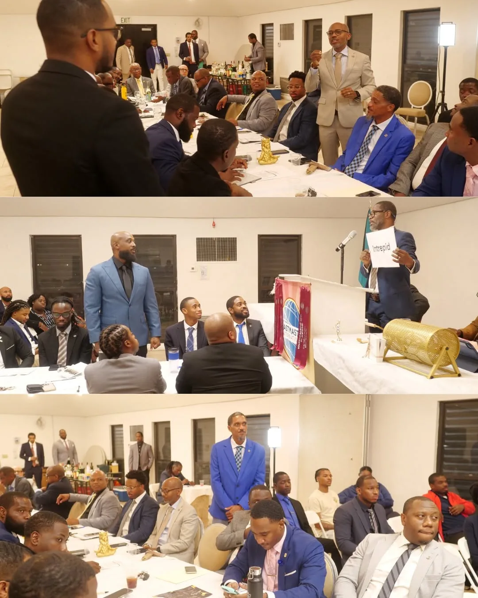
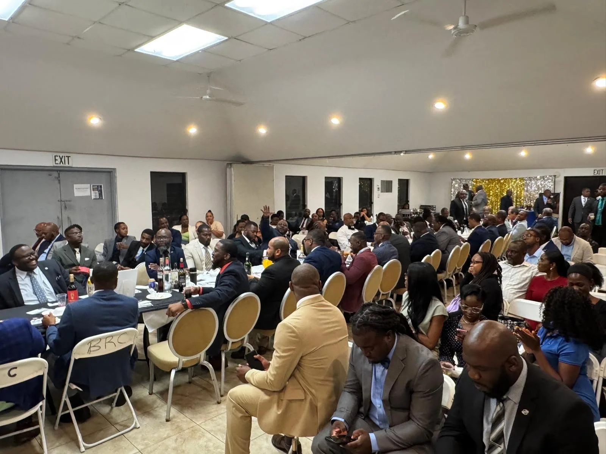
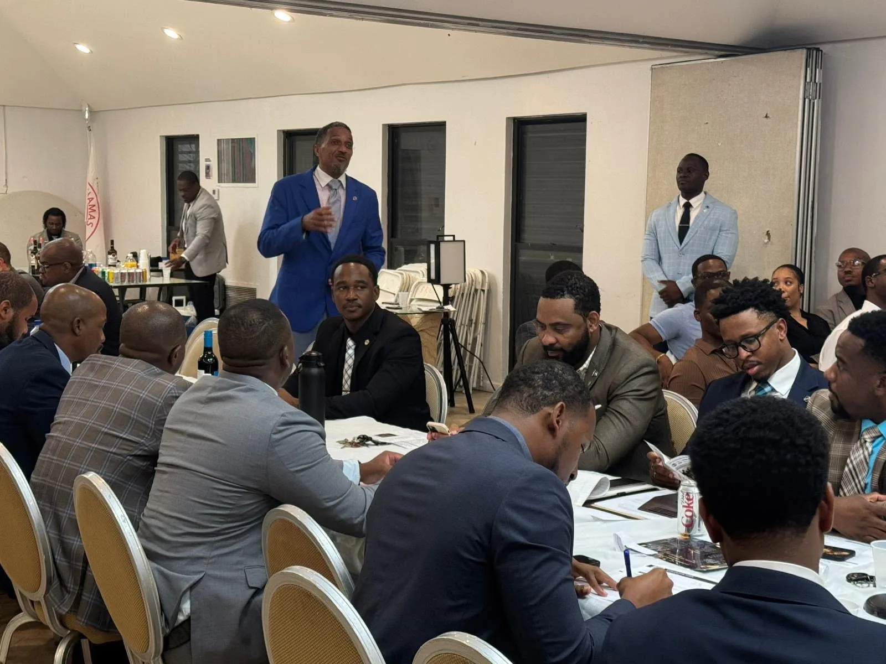

THE GALLERYThe room
The room
in motion.
Meetings. Service. Contests. Installation. Fellowship. The photographs become part of the archive.




This page is intentionally built as a living archive. As photographs are added, they can be tagged by year, event and category without rebuilding the page.